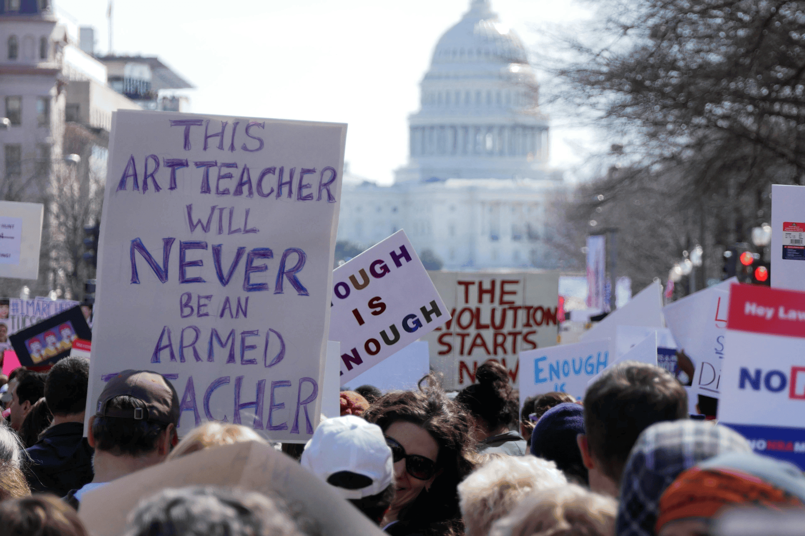
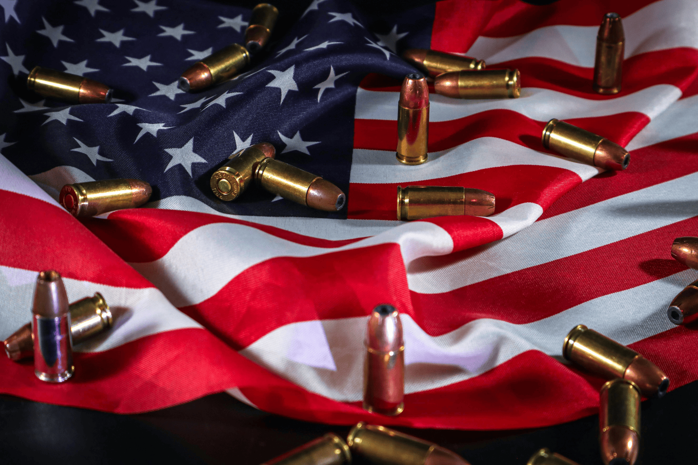

<div class="main-background">
    <div class="container">
        <app-text-mining-navigation></app-text-mining-navigation>
        <h1 style="text-align: center;">How do we curb mass shootings in the United States?</h1>
        <div style="float: right; width: 50%; margin-left: 50px; margin-bottom: 10px;">
            
        </div>
        <p>
            The Gun Violence Archive is an organization that aims to provide unbiased data concerning gun violence and crime in the United States<span citation="Gun Violence Archive - About" href="https://www.gunviolencearchive.org/about"></span>. According to their data, there were 5,190 mass shootings in the 11 years from 2014 through 2024. This amounts to approximately, 472 per year or 39 every single month. Of these 5,190 shootings, 287 were mass killings. A mass shooting is defined as "a minimum of four victims shot, either injured or killed, not including any shooter who may also have been <em>killed or injured</em> in the incident"<span citation="Gun Violence Archive - Explainer" href="https://www.gunviolencearchive.org/explainer"></span>. The definition of a mass killing or mass murder is when four or more victims are <em>killed</em>, not including the shooter. To be clear, the difference between the two definitions is the inclusion of injury in the former definition. Of the 5,190 mass shootings in the 11 year period, 287 (5.5%) were mass killings. This equates to a mass killing occuring somewhere in the United States approximately every two weeks. Furthermore, due to the definitions requiring four or more victims, the true life toll of gun violence is higher than these numbers suggest since not every shooting has at least four victims. At the time of writing, it is February 13th, 2025. So far this year, there have been 33 mass shootings, one of which has been a mass killing<span citation="Coroner identifies 4 family members found fatally shot in Santa Rosa home" href="https://www.cbsnews.com/sanfrancisco/news/santa-rosa-4-found-dead-coroner-identifies-family/"></span>. The United States has the 32nd highest rate of deaths from gun violence in the world<span citation="Gun violence deaths: How the U.S. compares with the rest of the world" href="https://www.npr.org/sections/goatsandsoda/2021/03/24/980838151/gun-violence-deaths-how-the-u-s-compares-to-the-rest-of-the-world"></span> with its citizens holding an average of 120.5 firearms per 100 people<span citation="U.S. Remains an Outlier in Firearm Possession, Gun-Related Deaths" href="https://www.usnews.com/news/best-countries/articles/2023-01-30/how-the-u-s-compares-to-the-world-on-guns"></span>. 

        <p>
            Legally, there is no problem with this level of gun ownership. A commonly cited piece of law is the United States' Constitution's Second Amendment<span citation="Second Amendment" href="https://constitution.congress.gov/constitution/amendment-2/"></span> which reads "A well regulated Militia, being necessary to the security of a free State, the right of the people to keep and bear Arms, shall not be infringed." Two semi-recent court cases were centered directly around the second amendment: <em>District of Columbia v. Heller</em><span citation="District of Columbia v. Heller" href="https://www.oyez.org/cases/2007/07-290"></span> and <em>McDonald v. Chicago</em><span citation="McDonald v. Chicago" href="https://www.oyez.org/cases/2009/08-1521"></span>. Both court cases were decided in a 5-4 vote. In <em>District of Columbia v. Heller</em>, the majority opinion stated that the second amendment guaranteed an individual right to possess and carry weapons, while the dissenting opinion argued that the amendment "does not create an unlimited right to possess guns for self-defense purposes".The majority and dissenting opinion came to similar respective conclusions in <em>McDonald v. Chicago</em>. The supreme court is theoretically meant to be an impartial and non-partisan entity<span citation="About the Supreme Court" href="https://www.supremecourt.gov/about/about.aspx"></span>, but public faith in that central tennant in waning<span citation="The American public no longer believes the Supreme Court is impartial " href="https://thehill.com/regulation/court-battles/3807849-the-american-public-no-longer-believes-the-supreme-court-is-impartial/"></span><span citation="How Supreme Court Ideology Has Shifted Over Time" href="https://www.allsides.com/blog/how-supreme-court-ideology-has-shifted-over-time-ketanji-brown-jackson"></span><span citation="How the Supreme Court became a political battlefield" href="https://www.bbc.com/news/articles/crg4rz6zedyo" citationId="test"></span>. Thus, it is worth noting that for both cases, the majority opinion came from justices nominated by conservative presidents. The dissenting group for <em>District of Columbia v. Heller</em> had two out of four justices appointed by democratic presidents, while <em>McDonald v. Chicago</em> had three out of four justices nominated by democratic presidents. One could argue that the supreme court decisions themselves are a small piece of evidence of the partisan divide around the gun control debate, and the two sides at play are Democrats and Republicans. The two major political parties have very different views on the root causes of gun violence and how the prooblem should be addressed.

        <div style="float: left; width: 50%; margin-right: 50px; margin-bottom: 10px;">
            
        </div>
        <p>
            The Republican party views on gun control center around freedom, individual responsibility, and the majority supreme court opinion of the second amendment as described above<span citation="Republican Views on Gun Control" href="https://www.republicanviews.org/republican-views-on-gun-control/"></span>. The National Rifle Association (NRA) has called for more secure schools, an improved mental health system, and further support for local law enforcement are key methods to preventing violence in communities<span citation="NRA encourages 'real solutions' to 'stop violence' after senators reach bipartisan gun framework agreement" href="https://www.foxnews.com/politics/nra-real-solutions-stop-violence-bipartisan-agreement-gun-framework"></span>. The NRA is a gun rights advocacy group, self described "as a major political force and as America's foremost defender of Second Amendment rights"<span citation="NRA - Politics and Legislation" href="https://explore.nra.org/interests/politics-and-legislation/"></span>. They claim that gun control does not work; criminals don't obey gun laws, background checks are ineffective, and criminals obtain firearms through sources other than retail<span citation="Why Gun Control Doesn’t Work" href="https://www.nraila.org/why-gun-control-doesn-t-work/"></span>. They also claim that crime levels decrease when guns are in the hands of the right people. If gun control laws do not work, then other methods of solving the problem must be explored. Mass shootings in schools have prompted gun rights advocates to support teachers in being armed; if a teacher has a gun, it will be a deterrent and a first line of defense for students<span citation="School shootings prompt more teachers to consider carrying guns" href="https://www.foxnews.com/us/school-shootings-prompt-more-teachers-to-consider-carrying-guns"></span>, and some states are beginning to allow teachers to carry weapons.<span citation="Fox News guest: Teachers should be armed 'like air marshals'" href="https://www.aol.com/2019-05-10-fox-news-guest-teachers-should-be-armed-like-air-marshals-23724276.html"></span><span citation="Florida’s new law lets teachers carry guns in class. Black and Latino students are worried." href="https://www.vox.com/policy-and-politics/2019/5/9/18563345/florida-texas-armed-teachers-school-safety-black-latino-students"></span>. 

        <p>
            Democrats hold different views. They believe that the right to own firearms is subject to a reasonable regulation, that assault weapons should be banned, and that laws around gun control should be strengthened<span citation="Democratic Part on Gun Control" href="https://www.ontheissues.org/celeb/democratic_party_gun_control.htm"></span>. Several democrats have also put forth the idea to expand background checks<span citation="What are the Democratic proposals on guns and what do critics say?" href="https://www.nbcnews.com/politics/2020-election/gun-control-policy-positions-trump-democratic-presidential-n1060231"></span>. Often, these of proposals are commonplace in the platform that democratic candidates build for themselves during political campaigns<span citation="2024 Democratic Platform Doubles Down on Gun Control" href="https://thereload.com/2024-democratic-platform-doubles-down-on-gun-control/"></span>. Several democrats, including some former high ranking officials like Kamala Harris, refer to these ideas as "common-sense" gun safety measures<span citation="Gun Control - Democratic Party" href="https://www.uspoliticalpartyplatforms.com/issues/gun-control/"></span>. Congressional democrats have also introduced gun legislation related to mental health<span citation="House Democrats unveil new gun bill focused on mental health" href="https://thehill.com/homenews/house/207760-house-democrats-unveil-new-gun-bill-focused-on-mental-health/"></span>. Such bills have proposed expanding the federal prohibition of purchasing guns to more groups like those undergoing court-ordered mental health treatments. Often, the gun debate surges back into the mainstream after a shooting. This is the case for the 17 April 2025 shooting as Florida State University where 2 employees were killed and six other people were injured by a 20-year-old suspect<span citation="FSU shooting: Here's what we know about the victims; 2 killed, 6 hurt - Live updates" href="https://www.fox35orlando.com/news/fsu-shooting-victims-what-we-know"></span>. In its aftermath, FSU students and Florida congressional democrats are calling for gun reforms and more access to mental health services<span citation="FSU students join Democrats in calls for gun and mental health reforms after deadly shooting" href="https://www.wcjb.com/2025/04/22/fsu-students-join-democrats-calls-gun-mental-health-reforms-after-deadly-shooting/"></span>.

        <p>
            Research concerning how effective various measures are was explored in a 2020 paper by Dr. Daniel Webster et. al. from John Hopkins University <span citation="Evidence concerning the regulation of firearms design, sale, and carrying on fatal mass shootings in the United States" href="https://onlinelibrary.wiley.com/doi/10.1111/1745-9133.12487"></span>. The study analyzed data of specific firearm policies from across all 50 states in the U.S. ranging from the mid-1980s to 2018. The authors concluded that there were two policies appeared to have a strong influence. The first was "requiring licening of firearm purchasers". The second was "restrictions or bans on large-capacity magazines" which generally refers to being banned from having "ammunition-feeding devices for semi-automatic firearms that hold more than 10 rounds."

        <p>
            The following pages of this investigation (accessed via the green buttons under the top banner of the website) do not investigate further research on the topic. Rather, they quantitatively  investigate over 2,000 news articles from both right-wing and left-wing media sources. Through these methods, we seek to answer questions such as:

        <ul>
            <li>How well can we predict news article political leaning from content alone?</li>
            <li>What are the most common words across right- and left-wing articles?</li>
            <li>What are the major subtopics discussed in news articles about mass shootings?</li>
            <li>What, if any, differences in tone are there in right- versus left- wing articles?</li>
        </ul>

        <p>
            The overall aim of this exercise, aside from shedding light on the questions above, is to gain a more hollistic understanding of how the topic of mass shootings is discussed in the media.  

        <app-footnotes></app-footnotes>
    </div>
</div>

